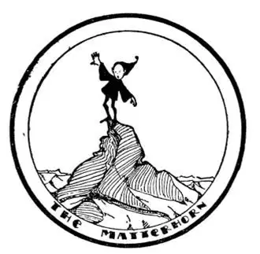
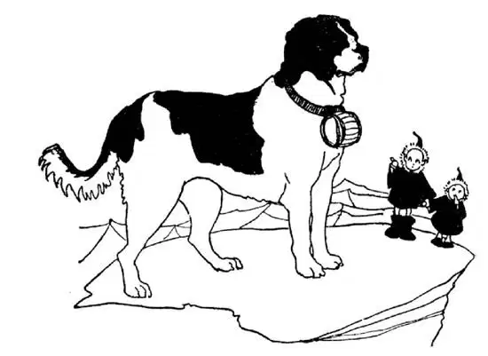

33
The Land in the Sky
天空之国

THE lowest country in Europe is Holland.
The highest country in Europe is the land of the Swiss people, called Switzerland.
There is hardly a hill in the whole of Holland. The country is as flat as a ball-field.
There is hardly a hill in the whole of Switzerland. The hills are all mountains—the highest mountains in western Europe—mountains so high that there is snow on their tops all the year round, in summer as well as winter. They are called the Alps.
But you can’t have a hole in a doughnut without the doughnut, and so you can’t have a mountain without a valley. The mountain tops in Switzerland are white, but the valleys are green, and cows with tinkling bells graze over the fields. The melting snow from the mountain tops makes beautiful waterfalls and babbling, tinkling brooks in the valleys.
Have you ever seen the snow on the roof of a house suddenly slide off and fall to the ground? That is called an avalanche. But suppose the roof of the house were a mile long like the side of a mountain, and suddenly the snow covering it slipped and fell into the valley beneath. That is an avalanche such as they have in Switzerland; and sometimes avalanches bury people and houses and even whole villages beneath.
Some long and wide valleys are filled with snow that has turned to ice. The ice filling these long valleys, like a river frozen to the bottom, is called a glacier, and the biggest of these glaciers have names just as rivers have.
Most rivers start from springs, but in Switzerland they usually start from the melting ice under a glacier. One of these big glaciers in Switzerland is called the Rhône Glacier. From under the end of the Rhône Glacier, as from an ice cave, flows a cold stream of melting ice. This stream grows larger and larger as it flows on down the valley and is joined by other streams of melted snow and ice. It is then called the Rhône River. It runs on until it reaches a big, broad valley, which it fills and forms a lake—the largest lake in Switzerland—called Lake Geneva.
The Rhône flows out again on the other side of Lake Geneva, down through France past Lyons and the mulberry-trees and silkworm farms and silk manufactories I told you about, and at last empties into the Mediterranean Sea.
Another river with the same name as the Rhône, all except one letter, is the Rhine. It, too, starts from underneath a glacier, but flows north between France and Germany, through Holland, and empties into the North Sea.
There are many people in the World who think it great sport to climb mountains—the higher the mountain and the more difficult and the more dangerous it is, the more they like to climb it. Now the highest mountain in the Alps is Mont Blanc, which means White Mountain. Part of it is in Switzerland, but the top is in France. Every summer many people climb Mont Blanc and other mountains in the Alps. These mountain-climbers use long poles with spikes on the ends to catch on the ice, and they wear heavy shoes with hobnails; and they take along guides who know the way to go and the way to climb, and they are tied together so that if one slips over a ledge the others may pull him back. But every summer people lose their lives in such mountain-climbing. They slip and fall and are dashed to their death or they are covered by an avalanche and buried alive under the falling pile of snow.

Men risk their lives climbing to the top
人们冒着生命危险爬到山顶
Probably the hardest of all Swiss mountains to climb is a mountain that looks like a huge horn. It is called the “Matterhorn.” Only the most skilled and the most daring ever attempt to climb it, though the only thing you can do after you have risked your life to reach the top is to admire the view. The reason most people climb it, however, is simply so they can say “I’ve done it.”
So many people go to Switzerland to see the giant snow-covered mountains, even if they do not climb them, that the Swiss people have built hotels wherever there is a fine view of a mountain, or a waterfall, or some other wonderful or beautiful sight. There are thousands of such hotels all through Switzerland, so that the chief business of the Swiss people seems to be hotel-keeping, and they keep them very well indeed. In fact, it is said they are the finest hotel-keepers in the World. They are famous for other things too: Swiss milk chocolate, which you have probably eaten; Swiss cheese with big holes in it, which you may have eaten; Swiss watches; Swiss wood-carving, and cuckoo-clocks and cowbells and music boxes.
Most countries have an army and a navy as we have police and a watch-dog to keep out burglars. But Switzerland is one of the few countries in the World that has no seashore. So she can’t have a navy, and she doesn’t have to have much of an army either, because the mountains are like great walls to keep out the enemy. Switzerland kept out of both World Wars, although every country around her was fighting.
Switzerland is completely surrounded by other countries. On one side is France, on the other Germany, and on another Italy. So the Swiss have no language of their own. On the side nearest Italy they speak Italian, on the side nearest Germany they speak German and on the side nearest France they speak French. In fact, many Swiss people speak all three languages.
To get into Switzerland or out of Switzerland, or from one part of Switzerland to another, you don’t have to climb the mountains. You can go over the low places between the high mountains, but many of these low places are a mile or more high, so they are not so very low at that. These low places are called passes. One of these passes is named the Simplon; and Napoleon, the French general I told you about, once crossed the Simplon Pass with his army into Italy. But you can now go under and through the mountains, for in many places long tunnels have been built.
One of the longest tunnels is St. Gothard. The men who built it started to dig from both sides of the mountain, and the two holes they dug exactly met in the middle. Some people said it was wonderful that two tunnels, each miles long, dug from opposite sides of a mountain, should meet. The men replied, “Not at all. It would have been wonderful if the tunnels hadn’t met. We are not moles digging blindly. We had figured it out beforehand and we knew where we were digging.”
But the longest tunnel in the World is under the Simplon Pass. At one end of this tunnel is Switzerland and at the other end is Italy. It is over twelve miles long. I have been under the pass riding in a train through this tunnel and I have been over the top of the pass carried by my own two legs. It takes sixteen minutes to go through the tunnel. It took me part of two days to climb over.
Near the top of the Simplon Pass is a house called a hospice where I once spent the night. It is a house where certain priests, called monks, live, and the reason the hospice was built there and the reason the monks live there is to provide a shelter for travelers and a place where they may rest safely in case they should be caught in a storm.

He won’t hurt you. He is a good friend
他不会伤害你。他是个好朋友
Few people now cross the pass, for it is so easy and so quick and so safe to go through the tunnel; but before the tunnel was made underneath there was no other way for people to go from Italy to Switzerland but over the top of the pass, and many people were traveling that way all the time. Snow-storms and blizzards were likely to happen almost any time, summer or winter, and often travelers would be lost and frozen to death. These good monks living in the hospice were the life-savers of the mountain pass. They had built little huts along the mountain pathway and they had large, strong, intelligent dogs called St. Bernards who were trained to go forth from the hospice when there was a storm, and search for travelers who might have been overcome, lost their way, or fallen in the snow. A dog would carry, strapped to his neck, a barrel filled with bread and wine. His sense of smell was so strong he could find a man even though buried in the snow, shake him back to his senses, and drag him to the nearest hut, to wait for food and drink until the storm should stop. The Simplon Hospice is one of the few places in the World where any one, whether he be rich man or poor man, saint or sinner, will be housed for the night, fed, and taken care of for nothing, without question and without charge.
Do you know the story of William Tell? Well, Switzerland has many lakes, but the most beautiful one is called the Lake of Light—Lake Lucerne—and on the shore of Lake Lucerne is a little church marking the spot where William Tell is supposed to have shot the apple off of his young son’s head.
【中文阅读】
欧洲地势最低的国家是荷兰。
欧洲地势最高的国家是瑞士。
瑞士也是几乎连一座小山都没有。那里的山全都是高山——西欧最高的山脉——这些高山山顶一年四季白雪皑皑。这些山叫阿尔卑斯山脉。
但要做炸面圈就得有炸面圈中间的洞，因此有山的地方肯定就有山谷。瑞士山脉的山顶都是白色的，但山谷是绿色的，奶牛戴着叮当响的铃儿在田野里吃草。融化的雪水从山顶流下，形成了美丽的瀑布和潺潺的溪流。
你见过屋顶的积雪突然滑下来，整个掉到地面上吗？这样的现象叫雪崩。想象一下，如果屋顶有1英里长，像山坡一样，覆盖在上面的雪突然全部滑下来落到下面的山谷里。瑞士就会发生这样的雪崩；有时雪崩会把山谷里的人和房屋甚至整个村庄都埋进去。
有些又长又宽的山谷里满是已经冻成冰的积雪，就像一条河从河面到河床全部结成了冰，这些山谷里的冰叫做冰川，其中一些最大的冰川像河流一样也有名字。
大多数河流发源于泉水，而瑞士的河流通常源于冰川底部融化的冰水。瑞士最大的冰川之一叫“罗讷冰川”。就像从一个冰洞里流出水一样，从罗讷冰川的尽头的下面流出一股融化的冰水形成小溪。这条小溪顺着山谷向下流淌，其他冰雪融化的小溪与它汇合在一起形成一条越来越宽的河。这条河于是就叫做“罗讷河”。罗讷河不断向前流，最后流入一个又大又宽的山谷，河水注满山谷形成一个湖——瑞士最大的湖——叫做“日内瓦湖”。
罗讷河从日内瓦湖的另一侧又流出去，奔腾而下，穿过法国，流经里昂，我在前面说过里昂的丝绸业，罗讷河流过那些桑树林、养蚕农场和丝绸工厂，最后流入地中海。
还有一条河流的名字和罗讷河（Rhone）很像，除了一个字母不一样之外其余都一样，叫做莱茵河（Rhine）。它也是发源于冰川的底部，但是往北从法国和德国之间流过去，再穿过荷兰，最后流入北海。
世界上有很多人都认为爬山是一种很好的运动——山峰越高，越难攀登，越有危险，他们就越喜欢爬。现在阿尔卑斯山脉最高的山峰是勃朗峰，意思是白色的山。勃朗峰有一部分位于瑞士，但顶峰位于法国。每年夏天都有很多人去攀登勃朗峰和阿尔卑斯山脉的其他山峰。这些登山者使用一种末端带尖钉的可以抓住冰面的杆子，还穿着沉重的带平头钉的鞋子；他们还请熟悉路线的导游带路，他们用绳子拴在一起，这样如果有人滑下岩架其他人就可以把他拉回来。但是每年夏天都有人在登山时丧命。有人滑倒，跌落下去被摔死，有人遭 遇雪崩被活埋在掉下来的雪堆里。
也许瑞士所有高山之中最难攀登的是一座看起来像个大尖角的山，叫做“马特洪恩山”。只有登山技术极为熟练又极富冒险精神的人才敢尝试去攀登这座山，尽管冒着生命危险爬到顶峰，也只不过欣赏一下那壮丽的风景。然而大多数人之所以去攀登这座山，只是为了最终能说“我做到了”。
很多人去瑞士并不是为了爬山，而是去观赏白雪皑皑的山峰。所以凡是有美丽风景的地方瑞士人都建造了宾馆，供游客观赏高山、瀑布或者其他奇妙的美景。瑞士各地有几千家这样的宾馆，因此瑞士人最重要的生意看来就是宾馆经营，他们也确实把宾馆经营得很好。甚至，有人说瑞士人是世界上最善于经营宾馆的老板。他们还有其他东西也很有名：瑞士牛奶巧克力，你大概吃过吧；瑞士奶酪，中间有个挺大的洞，你可能也吃过；还有瑞士手表、瑞士木雕、布谷鸟自鸣钟、牛颈铃和八音盒等产品。
大多数国家都有陆军或海军，就像我们会有警察和监察人员一样，防止窃贼闯入。但瑞士是世界上少数几个没有海岸线的国家之一，所以没有海军，其实也不需要有多少陆军，因为那里的高山就像巨大的城墙一样把敌人挡在外面。两次世界大战瑞士都没有卷入，尽管周围每个国家都在打仗。
瑞士被其他国家整个环绕起来。一边是法国，另一边是德国，还有一边是意大利。因此瑞士人没有自己的语言，和意大利交界的地方说意大利语，和德国交界的地方说德语，和法国交界的地方就说法语。甚至，很多瑞士人三种语言都会说。
进入瑞士或者从瑞士出来，或者从瑞士的一个地区到另一个地区去，并不用翻山越岭。你可以从高山之间低凹的地方越过，但是很多这些低凹的地方起码也不低于1英里，因此地势并不是很低。这些低凹的地方叫做山口。其中有一个山口叫做辛普朗山口；拿破仑，我介绍过的那个法国将军，曾经率领他的军队穿过辛普朗山口进入意大利。但现在你可以从高山下面或者中间穿过去，因为很多地方都建了长长的隧道。
最长的隧道中有一个圣哥大隧道。当时建隧道的工人分别从山的两旁同时挖掘，他们凿的两个隧道口正好在中间相会。有些人说两边的隧道都有数英里长，从山的相对的两旁分开挖，最后竟能会合在一起真是太神奇了。建隧道的工人说：“一点也不神奇。如果两边隧道没有会合那才神奇呢！我们又不是鼹鼠，盲目挖地道。我们预先已经计算好一切，我们知道往哪挖。”
但是世界上最长的隧道是在辛普朗山口下面。隧道的一头是瑞士，另一头 是意大利，全长超过12英里。我曾经坐着火车在山口下的隧道里穿过，也曾徒步从山口上走过去。坐火车过隧道只需要16分钟。我自己翻越过去断断续续走了两天的时间。
在辛普朗山口顶部附近有一个房子，叫做旅客招待所，我在那住过一晚。这是某些叫做修道士的教士们住的地方，旅客招待所之所以建在那里，修道士之所以住在那里就是为了让旅客有一个避难所，万一遇到暴风雪他们可以进去避一避。
现在没有什么人从山口上过了，因为从隧道穿过去实在是方便、快捷、安全；但在隧道建成之前，要从意大利到瑞士去，除了从山口翻过，没有任何路可走，很多人经常要走这条道。无论夏天还是冬天，雪暴和暴风雨随时都有可能发生，经常会有旅客走失而被冻死。旅客招待所里的善良的修道士就是山口的救命者。他们沿山路旁建了一些小棚屋，还养了高大、强壮又聪明的狗，叫做圣伯纳犬，它们受过训练，遇到暴风雪时，它们就从旅客招待所出发去搜寻那些有可能晕倒、迷路或陷入雪中的旅客。圣伯纳犬的颈部系着一个小桶，里面装着面包和酒。它的嗅觉非常敏锐，即使是深埋在雪中的人它也能发现，把他摇醒，然后把他拖到最近的棚屋，在那等待食物和饮料，直到暴风雪停止。辛普朗山口的旅客招待所是世界上少数几个这样的地方之一：任何人，无论富人还是穷人，无论圣人还是罪人，都可以在那获得食宿，得到照料，没有任何盘问，也不要支付任何费用。
你知道威廉 · 退尔的故事吗？瑞士有很多湖，但是最美丽的一个湖叫做光之湖——卢塞恩湖——在卢塞恩湖岸边有座小教堂，这座教堂所在地据说是威廉 · 退尔从他小儿子头顶上射掉苹果的地方。 [1]